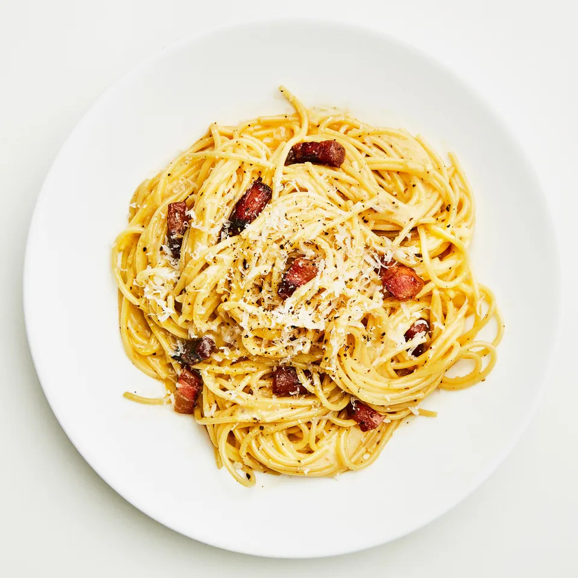

Simple Carbonara

Description
Humble ingredients-- eggs, noodles, cheese, and pork-- combine to create glossy, glorious pasta carbonara. It's the no-food-in-the-house dinner of our dreams.
Ingredients
- 3 Tbsp. kosher salt, plus more
- 4 oz. guanciale (salt-cured pork jowl), pancetta (Italian bacon), or bacon
- 2 oz. Parmesan
- 4 large egg yolks
- 2 large eggs
- Freshly ground black pepper
- 2 Tbsp. extra-virgin olive oil
- 1 lb. spaghetti, bucatini, or rigatoni
Steps
- Heat 6 qt. water in a large pot over high. When water starts to steam, add 3 Tbsp. salt and cover pot with a lid (this will bring water to a boil faster).
- While you are waiting on the water, do a little prep. Remove 4 oz. guanciale from packaging and cut into about 1x¼" strips. Finely grate 2 oz. cheese and set aside one-quarter of cheese for later.
- Whisk 4 egg yolks and 2 whole eggs in a medium bowl until no streaks remain, then stir in remaining grated cheese. Add several cranks of pepper and set aside.
- Working next to pot, heat 2 Tbsp. oil in a large Dutch oven or other heavy pot over medium. Add guanciale and cook, stirring occasionally, until crisp around the edges, 7 to 10 minutes.
- Remove pot from heat. Using a wooden spoon, fish out guanciale and transfer to a small bowl. Pour fat into a heatproof measuring cup, then add back about 3 Tbsp. to pot. Discard any remaining fat.
- Cook 1 lb. pasta in boiling water, stirring occasionally, 2 minutes shy of package instructions. Just before pasta is finished, scoop out 1¾ cups pasta cooking liquid with same heatproof measuring cup.
- Add 1 cup reserved pasta cooking liquid to Dutch oven and bring to a boil over medium-high. Drain pasta in a colander, then transfer to Dutch oven.
- Cook pasta, stirring constantly and vigorously, until al dente and water is reduced by about half, about 2 minutes. Remove pot from heat.
- Whisk ¼ cup pasta cooking liquid into reserved egg mixture, then very slowly stream into Dutch oven, stirring constantly, until cheese is melted and egg is thickened to form a glossy sauce. Season with salt, if needed. Thin sauce with remaining ½ cup pasta cooking liquid, adding a tablespoonful at a time, until it's the consistency of heavy cream (you most likely won't use all of it).
- Mix in guanciale and divide pasta among bowls. Top with pepper and reserved cheese.